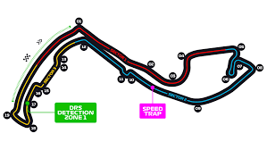

Les Circuits de la Formule 1
Les circuits de Formule 1 sont des lieux emblématiques où se déroulent les courses les plus excitantes de chaque saison. Chaque circuit offre des défis uniques pour les pilotes, et certains sont réputés pour leur histoire, leur technicité et leur capacité à tester les compétences des meilleurs pilotes.
Circuit de Bahrain
Le circuit de Bahrain est un circuit moderne qui offre des défis techniques et des conditions climatiques difficiles.
 En savoir plus
En savoir plus
Circuit de Jeddah
Le circuit urbain de Jeddah en Arabie Saoudite est rapide et spectaculaire, avec des virages serrés et des lignes droites longues.
 En savoir plus
En savoir plus
Circuit d'Australie (Melbourne)
Le circuit de Melbourne est connu pour ses virages serrés et son ambiance festive, faisant de lui un événement incontournable de la saison.
En savoir plusCircuit de Bakou
Le circuit urbain de Bakou en Azerbaïdjan est l'un des plus rapides du calendrier, combinant virages serrés et grandes lignes droites.
En savoir plusCircuit de Monaco
Le circuit de Monaco est l'un des plus célèbres et des plus prestigieux du calendrier. C'est un circuit urbain, très technique, qui traverse les rues de Monte-Carlo. Connu pour ses virages serrés et ses rares opportunités de dépassement, il représente un véritable défi pour les pilotes.
 En savoir plusCircuit de Silverstone
Le circuit de Silverstone, situé au Royaume-Uni, est un lieu légendaire qui a accueilli de nombreuses courses historiques. C'est un circuit rapide et fluide, avec des virages rapides qui permettent aux pilotes de pousser leurs machines à leurs limites.
En savoir plusCircuit de Spa-Francorchamps
Le circuit de Spa-Francorchamps, en Belgique, est l'un des plus respectés du calendrier. Connu pour son climat imprévisible et son célèbre virage Eau Rouge, il offre une combinaison unique de virages rapides et techniques.
En savoir plusCircuit de Suzuka
Le circuit de Suzuka au Japon est célèbre pour sa forme unique en figure 8 et ses défis techniques. Les pilotes adorent ce circuit pour sa complexité et ses virages exigeants, comme le fameux "S de Degner".
 En savoir plus
En savoir plus
Circuit de Monza
Le circuit de Monza en Italie est l'un des plus emblématiques, célèbre pour sa vitesse élevée et ses virages rapides. Il offre un spectacle inoubliable aux fans.
En savoir plusCircuit de Singapour
Le circuit de Singapour est un autre circuit urbain où les pilotes doivent gérer la chaleur et l'humidité tout en affrontant des virages difficiles.
En savoir plusCircuit de Las Vegas
Le circuit de Las Vegas est un événement nocturne dans la ville des lumières, offrant des lignes droites rapides et des virages techniques.
En savoir plusCircuit d'Abou Dabi
Le circuit d'Abou Dabi est un circuit moderne qui offre un défi de fin de saison avec ses virages serrés et ses lignes droites rapides.
En savoir plus